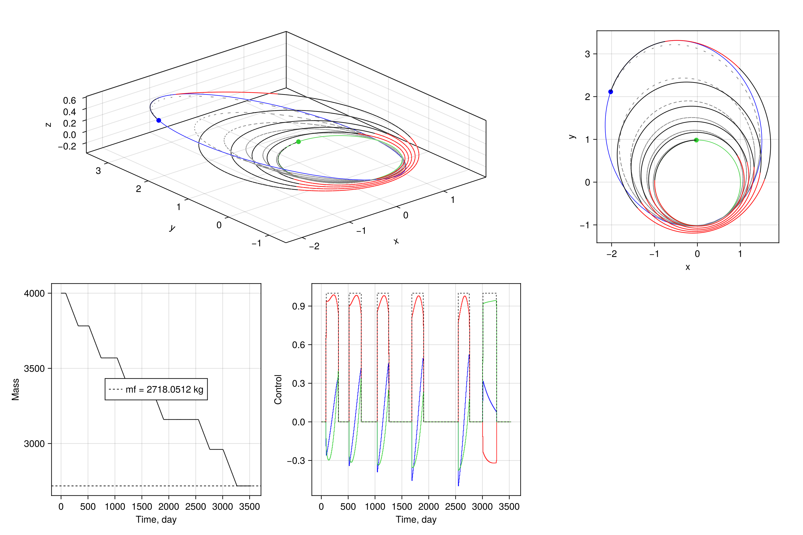

Dionysus transfer
Low-thrust heliocentric rendezvous with asteroid Dionysus: maximum final mass at a fixed time of flight.
A spacecraft flies from a prescribed Earth-departure state to the asteroid under constant specific impulse. The solve uses modified equinoctial elements so the coasting dynamics stay nonsingular, and demonstrates:
- Gauss variational equations with thrust in the radial–transverse–normal frame
- A throttle and a thrust-direction cone
- A fixed time of flight on a uniform grid
- A nonconvex Cartesian rendezvous, with final mass free
- Maximum-final-mass objective
File: examples_astrodynamics/example_dionysus.jl
Note: this example requires AstrodynamicsCore.jl.
Dynamics
The state is the modified equinoctial elements and the mass normalized by the initial mass,
\[\boldsymbol{x} = [p,\, f,\, g,\, h,\, k,\, L,\, m]^\top.\]
Here $p$ is the semi-latus rectum, $(f, g)$ and $(h, k)$ are the equinoctial components of eccentricity and inclination, $L$ is the true longitude, and $m(0) = 1$ corresponds to $4000\,\mathrm{kg}$. The control is the thrust direction in the radial–transverse–normal frame together with the throttle,
\[\boldsymbol{u} = [u_r,\, u_\theta,\, u_n,\, \Gamma]^\top.\]
Let $\mu$ be the Sun's gravitational parameter and
\[w = 1 + f\cos L + g\sin L, \qquad s^2 = 1 + h^2 + k^2.\]
Full thrust at unit mass has canonical acceleration $c_1$. The applied acceleration is
\[\boldsymbol{a} = \frac{c_1}{m}\,[u_r,\, u_\theta,\, u_n]^\top,\]
and the Gauss equations are
\[\begin{aligned} \dot p &= \sqrt{\frac{p}{\mu}}\,\frac{2p}{w}\, a_\theta, \\[0.4em] \dot f &= \sqrt{\frac{p}{\mu}}\Biggl[ \sin L\, a_r + \frac{(1+w)\cos L + f}{w}\, a_\theta - \frac{g}{w}(h\sin L - k\cos L)\, a_n \Biggr], \\[0.4em] \dot g &= \sqrt{\frac{p}{\mu}}\Biggl[ -\cos L\, a_r + \frac{(1+w)\sin L + g}{w}\, a_\theta + \frac{f}{w}(h\sin L - k\cos L)\, a_n \Biggr], \\[0.4em] \dot h &= \sqrt{\frac{p}{\mu}}\,\frac{s^2 \cos L}{2w}\, a_n, \\[0.4em] \dot k &= \sqrt{\frac{p}{\mu}}\,\frac{s^2 \sin L}{2w}\, a_n, \\[0.4em] \dot L &= \sqrt{\frac{p}{\mu}}\,\frac{h\sin L - k\cos L}{w}\, a_n + \sqrt{\frac{\mu}{p^3}}\, w^2, \\[0.4em] \dot m &= -c_2 \Gamma. \end{aligned}\]
The last term in $\dot L$ is the Keplerian mean motion. The mass-flow constant $c_2$ is the canonical rate at full throttle. In matrix form this is
\[\dot{\boldsymbol{x}}_{[1:6]} = B(\boldsymbol{x})\,(c_1/m)\,\boldsymbol{u}_{[1:3]} + \boldsymbol{D}(\boldsymbol{x})\]
with $\boldsymbol{D} = [0,0,0,0,0,\sqrt{\mu/p^3}\,w^2]^\top$, and $B$ matrix defined accordingly.
Length is scaled by $1\,\mathrm{AU} = 149.6\times 10^6\,\mathrm{km}$, so $\mu = 1$. Time and velocity follow from the solar gravitational parameter. Thrust is $0.32\,\mathrm{N}$ and $I_\mathrm{sp} = 3000\,\mathrm{s}$.
Boundary conditions
Time of flight is fixed at $3534$ days. The node times are a uniform grid on $[0, t_f]$, and the control is zero-order hold.
Fixed
- Initial state, including mass: $\boldsymbol{x}(0) = [\mathrm{mee}(\boldsymbol{r}_0, \boldsymbol{v}_0)^\top,\, 1]^\top$, with $(\boldsymbol{r}_0, \boldsymbol{v}_0)$ the prescribed heliocentric departure state.
- Terminal Cartesian state. Six nonconvex equalities enforce $\mathrm{rv}(p, f, g, h, k, L)\big|_{t_f} = (\boldsymbol{r}_f, \boldsymbol{v}_f)$.
- Thrust cone, at every interval: $\|(u_r, u_\theta, u_n)\|_2 \le \Gamma \le 1$.
- Path bounds $p(t) \ge 0.8$ and $m(t) \ge 0.1$, in canonical units.
The arrival state $(\boldsymbol{r}_f, \boldsymbol{v}_f)$ is the target Keplerian orbit propagated to the fixed arrival epoch,
\[a = 2.2\,\mathrm{AU},\quad e = 0.542,\quad i = 13.6^\circ,\quad \Omega = 82.2^\circ,\quad \omega = 204.2^\circ,\quad M = 114.4232^\circ.\]
Free
- Final mass. The objective is $\min\; -m(t_f)$, so the solve maximizes the mass that remains.
- Thrust direction and throttle along the transfer.
- Terminal equinoctial elements. The Cartesian rendezvous is the constraint that is enforced; $L$ is $2\pi$-periodic in that map. The reference trajectory appends $N_\mathrm{rev} = 5$ revolutions to the guessed terminal true longitude and linearly interpolates mass from $1$ down to $0.4$. That terminal mass is only a guess.
"""Sample SCP problem with MEE"""
using Base.Threads
using Clarabel
using GLMakie
using JuMP
using LinearAlgebra
using OrdinaryDiffEq
using AstrodynamicsCore
@show nthreads()
include(joinpath(@__DIR__, "../src/SCPLib.jl"))
struct ControlParams
μ::Float64
c1::Float64
c2::Float64
end
MU_SUN = 132712440018.0
G0 = 9.8065
DU = 149.6e6
VU = sqrt(MU_SUN / DU) # velocity scale, m/s
TU = DU / VU # time scale, s
MASS = 4000.0 # kg
THRUST = 0.32 # Newtons
ISP = 3000.0 # seconds
μ = MU_SUN / (VU^2 * DU)
c1 = THRUST/1e3 / (MASS*DU/TU^2) # canonical max thrust
c2 = THRUST/1e3 / (ISP*G0/1e3) / (MASS/TU) # canonical mass flow rate
params = ControlParams(μ, c1, c2)
function eom_mee!(drvm, rvm, pu, t)
(; params, u) = pu
p,f,g,h,k,L,mass = rvm[1:7] # unpack state
cosL = cos(L)
sinL = sin(L)
s2 = 1 + h^2 + k^2
w = 1 + f*cosL + g*sinL
hsinL_kcosL = h*sinL - k*cosL
B_mee = sqrt(p/params.μ) * [
0 2p/w 0;
sinL ((1+w)*cosL + f)/w -g/w*hsinL_kcosL;
-cosL ((1+w)*sinL + g)/w f/w*hsinL_kcosL;
0 0 1/w*s2/2*cosL;
0 0 1/w*s2/2*sinL;
0 0 1/w*hsinL_kcosL;
]
D = [0.0, 0.0, 0.0, 0.0, 0.0, sqrt(params.μ/p^3) * (1 + f*cosL + g*sinL)^2]
drvm[1:6] = B_mee * (params.c1 / mass) * u[1:3] + D
drvm[7] = -u[4] * params.c2
return
end
# -------------------- boundary conditions -------------------- #
tof = 3534 * 86400 / TU
N_rev = 5
R0 = [-3637871.081; 147099798.784; -2261.44] / DU
V0 = [-30.265097; -0.8486854; 0.0000505] / VU
RV0 = [R0; V0]
orbit_init = AstrodynamicsCore.Planet(params.μ, 0.0, RV0, "initial")
mee0 = AstrodynamicsCore.rv2mee([R0; V0], params.μ)
M0 = deg2rad(114.4232)
TA0 = AstrodynamicsCore.ma2ta(M0, 0.542)
kepf = [2.2, 0.542, deg2rad(13.6), deg2rad(82.2), deg2rad(204.2), TA0]
RVf0 = AstrodynamicsCore.kep2rv(kepf, params.μ)
orbit_final = AstrodynamicsCore.Planet(params.μ, 0.0, RVf0, "final")
RVf = AstrodynamicsCore.eph(orbit_final, tof + (56284 - 53400) *86400/TU)
meef = AstrodynamicsCore.rv2mee(RVf, params.μ)
meef[6] += 2π * N_rev # append revolutions
x0_ref = [mee0; 1.0]
xf_ref = [meef; 0.4]
# get initial and final orbits for plotting
initial_orbit_rvs = hcat([AstrodynamicsCore.eph(orbit_init, t) for t in LinRange(0.0, orbit_init.period, 100)]...)
final_orbit_rvs = hcat([AstrodynamicsCore.eph(orbit_final, t) for t in LinRange(0.0, orbit_final.period, 100)]...)
# -------------------- define objective -------------------- #
function objective(x, u)
return -x[7,end]
end
ng = 6
function g_noncvx(lincache, x, u)
g = AstrodynamicsCore.mee2rv(x[1:6,end], params.μ) - RVf
return g
end
# -------------------- create problem -------------------- #
N = 500
nx = 7 # [p,f,g,h,k,L,mass]
nu = 4 # [ux,uy,uz,Γ]
times = LinRange(0.0, tof, N)
# create reference solution
x_ref = zeros(nx, N)
x_ref[1:6,:] = hcat(LinRange.(mee0, meef, N)...)'
x_ref[7,:] = LinRange(x0_ref[7], xf_ref[7], N)
u_ref = zeros(nu, N-1)
# instantiate problem object
prob = SCPLib.ContinuousProblem(
Clarabel.Optimizer,
eom_mee!,
params,
objective,
times,
x_ref,
u_ref;
ng = ng,
g_noncvx = g_noncvx,
ode_ensemble_method = EnsembleThreads(),
ode_method = Vern7(),
)
set_silent(prob.model)
# append boundary conditions
@constraint(prob.model, constraint_initial_rv, prob.model[:x][:,1] == x0_ref)
# @constraint(prob.model, constraint_final_rv, prob.model[:x][1:6,end] == meef) # enforced in g_noncvx
# minimum on mass for numerical stability
@constraint(prob.model, constraint_mass_lb[k in 1:N], prob.model[:x][7,k] >= 0.1)
@constraint(prob.model, constraint_p_lb[k in 1:N], prob.model[:x][1,k] >= 0.8)
# append constraints on control magnitude
@constraint(prob.model, constraint_associate_control[k in 1:N-1],
[prob.model[:u][4,k], prob.model[:u][1:3,k]...] in SecondOrderCone())
@constraint(prob.model, constraint_control_magnitude[k in 1:N-1],
prob.model[:u][4,k] <= 1.0)
sols_ig, _ = SCPLib.get_trajectory(prob, x_ref, u_ref)
# -------------------- instantiate algorithm -------------------- #
algo = SCPLib.SCvxStar(nx, N; ng=ng, w0 = 1e0, Δ0=0.1, w_max=1e20)
# solve problem
maxiter = 1000
tol_feas = 1e-6
tol_opt = 1e-6
solution = SCPLib.solve!(algo, prob, x_ref, u_ref; tol_feas = tol_feas, tol_opt = tol_opt, maxiter = maxiter)
sols_opt, g_dynamics_opt = SCPLib.get_trajectory(prob, solution.x, solution.u)
@show -solution.info[:J0][end] * MASS
# -------------------- make plot -------------------- #
fig = Figure(size=(1200,800); title="SCP problem with MEE")
ax3d = Axis3(fig[1,1:2]; aspect=:data, xlabel="x", ylabel="y", zlabel="z")
ax2d = Axis(fig[1,3]; aspect=DataAspect(), xlabel="x", ylabel="y")
scatter!(ax3d, RV0[1], RV0[2], RV0[3], color=:limegreen, markersize=10)
scatter!(ax3d, RVf[1], RVf[2], RVf[3], color=:blue, markersize=10)
lines!(ax3d, initial_orbit_rvs[1,:], initial_orbit_rvs[2,:], initial_orbit_rvs[3,:], color=:limegreen, linewidth=0.8)
lines!(ax3d, final_orbit_rvs[1,:], final_orbit_rvs[2,:], final_orbit_rvs[3,:], color=:blue, linewidth=0.8)
scatter!(ax2d, RV0[1], RV0[2], color=:limegreen, markersize=10)
scatter!(ax2d, RVf[1], RVf[2], color=:blue, markersize=10)
lines!(ax2d, initial_orbit_rvs[1,:], initial_orbit_rvs[2,:], color=:limegreen, linewidth=0.8)
lines!(ax2d, final_orbit_rvs[1,:], final_orbit_rvs[2,:], color=:blue, linewidth=0.8)
# plot initial guess
ucolor_tol = 1e-2
for (isol,sol) in enumerate(sols_ig)
rvs = hcat([AstrodynamicsCore.mee2rv(Array(sol)[1:6,i], params.μ) for i in 1:length(sol.t)]...)
lines!(ax3d, rvs[1,:], rvs[2,:], rvs[3,:], color=:grey, linewidth=1.0)
lines!(ax2d, rvs[1,:], rvs[2,:], color=:grey, linewidth=1.0)
end
# plot optimal solution
ucolor_tol = 1e-2
for (isol,sol) in enumerate(sols_opt)
rvs = hcat([AstrodynamicsCore.mee2rv(Array(sol)[1:6,i], params.μ) for i in 1:length(sol.t)]...)
lines!(ax3d, rvs[1,:], rvs[2,:], rvs[3,:], color=u_ref[4,isol] > ucolor_tol ? :red : :black, linewidth=1.0)
lines!(ax2d, rvs[1,:], rvs[2,:], color=u_ref[4,isol] > ucolor_tol ? :red : :black, linewidth=1.0)
end
axm = Axis(fig[2,1]; xlabel="Time, day", ylabel="Mass", xticks=0:500:3500)
for (isol,sol) in enumerate(sols_opt)
lines!(axm, sol.t*TU/86400, Array(sol)[7,:] * MASS, color=:black, linewidth=1.0)
end
hlines!(axm, solution.x[7,end]*MASS, color=:black, linewidth=1.0, label="mf = $(round(solution.x[7,end] * MASS * 1e4)/1e4) kg", linestyle=:dash)
axislegend(axm, position=:cc)
axu = Axis(fig[2,2]; xlabel="Time, day", ylabel="Control", xticks=0:500:3500)
stairs!(axu, times*TU/86400, [solution.u[1,:]; 0.0]; step=:post, color = :blue, linewidth=0.8)
stairs!(axu, times*TU/86400, [solution.u[2,:]; 0.0]; step=:post, color = :red, linewidth=0.8)
stairs!(axu, times*TU/86400, [solution.u[3,:]; 0.0]; step=:post, color = :limegreen, linewidth=0.8)
stairs!(axu, times*TU/86400, [solution.u[4,:]; 0.0]; step=:post, color = :black, linewidth=0.8, linestyle=:dash)
display(fig)